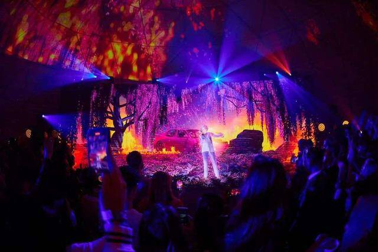
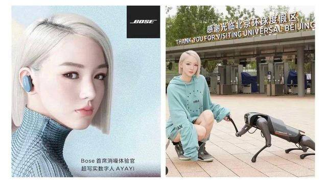
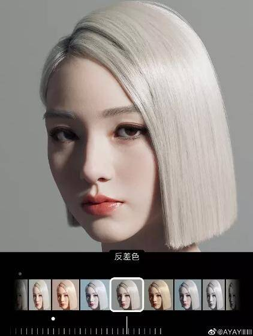
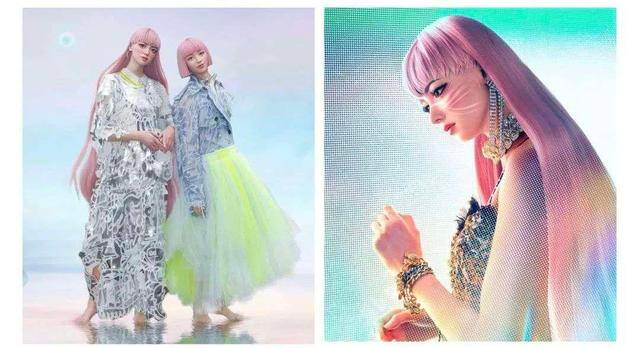

朋友最近迷上了一个姑娘。
不要误会，这不是在讲言情故事。他用软件在网上生成了他的一个虚拟异性同款，一颦一笑都极其逼真。然后发了朋友圈，问大家，这个颜值可以在元宇宙出道了吗？
在2021，虚拟人更新迭代的速度之快，可与加密币的更新速度一较高下。从二次元的漫画风进化成逼近真人的样貌，也已不再是新鲜事。
随着越来越多年轻人的认同和追捧，虚拟人这两年从非主流出圈，越来越大众化，不仅仅是“极客们”的专属，也不再是宅男们的专宠，现在普通的996上班族都可以打造出自己设计的虚拟人物，而一个热门的虚拟偶像也受到了全民喜爱，正被越来越多时尚大牌官方认证。
虚拟偶像哪里好呢？
年轻人们随口就来：永远年轻漂亮、事业周期长、可以颜值和才华兼备、AI学习能力强大、人设不会塌房，能迎合大众审美，更包容也会更有个性。
很明显，当下已经有越来越多的人开始将自身的情感以一种半调侃半正式的方式寄托到虚拟人物的身上。尤其是后疫情时代，人与人之间的社交距离被迫放大，与之相对应的，却是人们对于亲密关系的需求与自身情感量的只增不减。
最近，英国《经济学人》网站发表了题为《下一个是什么？2022年值得关注的22项新兴技术》的文章，里面写道：
“2022年，元宇宙被用来指代电子游戏、社交网络与娱乐的融合，目的是创造新的沉浸式体验；在虚拟网红方面，预计2022年将有150亿美元用于网红营销，虚拟网红也会迅速增多。”
时代在变，在产业数字化的浪潮下，不变的是以全新的情感导向为核心的消费模式正在逐渐形成。 虚拟人们如何在万变的时代里更具美好未来，也是一个值得研究的话题。
01、自带NFT属性的虚拟 Idol
12月3日，在迈阿密巴塞尔艺术展上，CC is Dreaming作为首个元宇宙NFT属性的虚拟偶像，首次以全息图的形式登台演出，正式出道了。
“虚实结合”带来的“奇观”，让人们在观看虚拟偶像现场演出时，感到新奇。当虚拟“爱豆”CC随着音乐开始起舞、并在展厅里360度范围和观众互动时，也不奇怪现场有人开始大喊“CC”，并对这种犹如置身梦境般的演出表示惊叹。

从CC整个舞蹈动作流畅，没任何卡顿，可以看出CC的技术壁垒很高。而这也说明团队技术板块的3D建模技术与算力已经发展到足够成熟。CC这次出道首秀，也是由当今 Z 世代时代精神的领先创意总监之一、曾与Camilla Cabello、Katy Perry、Ty Dolla $ign 等艺术家合作且屡获殊荣的创意总监 Amber Park 执导。
CC出道反响非常热烈，在首秀圆满结束后，后面的计划已经排满，艺术圈里traditional entertainment和crypto领域的项目都表达出强烈的合作意愿，想要约它，请老老实实排队静候。
Cynthia Cao作为“CC is Dreaming”的创建人，则将在后期着力打造CC的NFT全方位人格个性。

在CC的诞生之初，就被赋予了两种性格：一种是白天和人类，另一种则是梦境中的空灵和无限。
“目前，大多数 NFT 项目都是个人资料图片，IP 非常单薄，主要专注于建立社区，没有一个NFT项目实际上有背景故事。NFT项目背后也没有一个能唱歌、能跳舞、能表演的形象。” Cynthia如是说，而这样的填补，正敲中了市场的痛点。
“像CC这样的虚拟偶像的加密元素意味着他们的音乐、表情和外表都将在区块链上；而创作背后的艺术家在他们自己的电子钱包中拥有他们内容的所有权利。我们最终的愿景是在元宇宙中建立一个平行的娱乐产业。”说到CC作为虚拟偶像的核心优势，Cynthia认为在于她代表的理念和运作模式。
CC不仅仅是一个virtual idol，她是诞生于Web3.0的新的生命形式，定位于全球范围内的一个社会实验。
在未来，CC将通过DAO的形式让粉丝和艺术家可以真正地共同创作拥有元宇宙专属的未来的艺术和表达模式。 随着CC在web3.0时代的成长，也会可以扩展到各种领域，包括但不限于时尚、游戏、音乐、电影，各种融合性的world building project，成就更大的作为。
同时，CC未来的粉丝可以直接购买CC产出的NFT，例如歌曲、视频。也可以通过持有NFT加入到粉丝专属社区里，获得各种不同的使用权限，例如参加CC线下的活动，独家购买数码时装等。
当然，虚拟人高成本的运营维护也直接影响其事业期的长短。很多虚拟人之所以昙花一现，就是强大的烧钱营销一旦达不到效果，离开了资本的支持，就会马上成为过去式。
CC团队目前已收到很多投资意向，不久后将会对外公布新的融资情况。
02、国内首个Metahuman出道半年估值超6亿
和 CC的颜值能一较高下的虚拟人，AYAYI算一个。AYAYI的出现，也让虚拟偶像的商业兑现有了更多的可能。
作为今年国内首个Metahuman，AYAYI不仅仅是阿里巴巴旗下的首个数字人员工，也是横空出世的顶流虚拟偶像，随着粉丝经济推动的商业价值，她的身份也在进一步增加：NFT艺术家、数字策展人、潮牌主理人、顶流数字人、时尚博主……
AYAYI自今年5月20日诞生以来，靠美貌迅速出圈，先后接到了安慕希和天猫超级品牌日的代言，成为AMX数字潮流艺术推荐官、共同研发数字酸奶；随后disney、娇兰、LV、SMFK、CANOTWAIT、铂雅航空、BOSE、环球影城等大品牌纷至沓来，许多自媒体及各种主流媒体展开报道，粉丝人群短时间内裂变式剧增。
刚结束不久的“双十一”中，AYAYI与天猫超级品牌日在“天猫数字藏馆”合办了一场属于元宇宙的数字艺术展，其中宝洁、小鹏汽车、五粮液、Burberry等八大来自不同领域、面对不同人群的超级品牌以各种数字形式纷纷参展。

Metahuman最早在DC漫画宇宙中出现时，是用来形容用“超能力人类”。而在AYAYI这里，则代表着一种“基于Unreal引擎开发的3D高保真数字仿真人”，其最重要特点，就是**高度仿真，接近极致的真实。**本身的高度拟真性，使得她十分适合于走进人类生活，成为各种商业、艺术与科技场景的著名NPC，甚至唯一主角。
但要说AYAYI的核心优势，那大概就是因为够美。
虚拟偶像很多，但美得生动超凡脱俗的并不多。如果看起来木讷像木偶，更难以获得Z世代们的好感。
而AYAYI的成功，在于团队设计人员深厚的艺术积淀，能够塑造出这样一个宁静、气质突出而又有超越真实的人性力量的“超现实人”。人们虽然知道她是假的，但在假的外形之内，人们看到了她内在的真实，因而感受到了内心的触动。
作为当前顶流虚拟网红，以美貌为基础，结合人设架构下一整套从人物形象、背景设定、生活方式，到深层人生趋势在内的数字化价值观体系，她代表了一个时代或者是一个类型的女性， 时尚、精干、自由、独立、渴望不同，追求改变。
从这样的人设、属性、人物特点、价值观与美学观感来看，她天生适合生活、新科技、服装、饰品、美妆等生活品牌的代言，当然线上的游戏、影视，以及VR、沉浸式娱乐等，也完全在擅长领域之内。

AYAYI的执行方RM Inc.（燃麦科技）曾在AYAYI上线的1个月内获得千万级Pre-A轮融资，投资机构包括国内头部虚拟偶像综合服务商万像文化等。目前作为2021年最活跃、也是最时尚的IP之一，AYAYI商业估值已经超过6亿。
“AYAYI从来没有把自己定位成一个博主，她有自己的事业和使命。当每个人都能很轻易地理解元宇宙是什么，当人们能用很简单的方式进入元宇宙的时候，AYAYI的使命也就完成了，这是她最终的目标。” AYAYI团队表示。
03、虚拟人赛道爆棚，靠什么打造大IP
不止是CC si Dreaming、AYAYI，2021年大火的虚拟明星层出不穷。
11月19日，在推特和ins上拥有上亿粉丝的Justin Bieber，化身成身穿黑色休闲装的虚拟人，用标志性的抖腿和2021年新专辑《Justice》的几首金曲，向来自全球的观众献出了自己的首场虚拟演唱会：
8月百度公司在自家的百度2021世界大会上，推出了以“龚俊”命名的AI虚拟人形象，简直到了以假乱真的程度：
虚拟人“龚俊”是国内首个可以在 APP 端和人真正互动的虚拟人，也是百度对搜索拟人化的具体实践，由以往二次元卡通虚拟助手升级到了明星 IP 类助理，不仅声音与外形的高度拟人化，还支持近乎真人般的互动与服务，为用户带来沉浸感。
7月，日本虚拟网红“大前辈”、顶着粉红色娃娃头的IMMA成为屈臣氏首位虚拟代言人：
同一时间，打造IMMA的日本虚拟人公司Aww.Inc还为今年上映的动画电影《BELLE》打造了全新的同名虚拟人Belle，这个有着雅典娜气质的粉色长发公主，既有着二次元动漫人物的夸张，又有着一种接近真人的生动：

6月，腾讯和新华社联合打造、专门面向航天主题和场景研发的数字航天员、虚拟人记者“小诤”亮相，制作成本支出非常大，例如团队在“小诤”脸上种了10万根面部汗毛：
5月，雀巢咖啡推出宣传片《Re/Imagine》的女主角Zoe长得酷似年轻时候的孙燕姿，但她其实是雀巢官方原创的一位虚拟偶像代言人：
2021年，从全息演唱会到各种商业代言，我们能发现虚拟人已经在慢慢渗透入日常的生活之中。
随着动作捕捉技术的发展，精度越来越高而成本越来越低，技术本身早已不再是限制各大公司推出虚拟人的门槛。现在普通大众，只要愿意花时间去学习，也能自己创造出、或者扮演出生动的虚拟人。
但是当技术不再是门槛之后，虚拟人IP的策划和运营，以及构建、拓展虚拟艺人的商业化场景，将是全球虚拟人从1到10进程中的关键所在。
本质上，虚拟人打造的也是一种“内容化”，团队打造出人物形象后，后续需要不断推出新人设、新素材，以丰富其形象，这都需要制作团队投入很多精力。较高的运营成本，也阻碍了虚拟人的事业周期。在各种虚拟网红出现之前，就有很多品牌跟风推出了自有的虚拟形象，但却没有持久地运营下去。
而虚拟人中的大部分，要么败在一眼可见的失真，要么在实体景象中原形毕露，打造一个超级大IP需要付出更多的金钱和营销推广上的努力。加上没有背景的数字内核是否真的能够演绎出足以动人的虚拟人格、没有人格是否也能通过外表吸引“真爱粉”，这些都有待时间去考证。
总之，在想如何去打造虚拟大IP之前，也许更要想清楚，为什么要去打造虚拟大IP。IP本身通常来说并非手段、也不是商业目的，而是实现目的过程中涌现的副产品。
憧憬那些在互联网时代“重做一遍”的事业，在元宇宙再重做一遍，也不是没可能。打造虚拟人不难，难的是创业路上，不忘初心。
早在2014年，美国年收入最高的女企业家Martine Rothblatt出版了一本探讨人工智能前景的书《虚拟人：数字永生的前景与陷阱（Virtually Human: The Promise and Peril of Digital Immortality）》，书中提到了一个观点，在7年后的今天来看，极具哲理：
就像人从飞鸟身上获得灵感发明了飞机，迄今为止，飞机上仪器设备的精密程度任远远比不上鸟的身体结构的精密，但这并不影响现在的飞机能够飞得更高更快、飞行距离更长。
写这本书的时候，Martine Rothblatt对虚拟人的未来充满信心。你呢？
国内也掀起了一波又一波虚拟人浪潮，从国内第一支虚拟女团A-Soul，到高度逼真的形象炸裂小红书的AYAYI，再到一夜涨粉破百万的虚拟美妆达人柳夜熙，这些走二次元风或高精度超写实风的虚拟人，在资本圈和文娱圈引发了地震。